options(scipen = 999)
library(pacman)
p_load(readxl, openxlsx, tidyverse, dplyr, reshape2, kableExtra, moments, glue)Relatório Temas para a Saúde
banco <- read_rds("temas.rds")
indicadores <- read_rds("indicadores.rds")quadro <- function(x){
banco %>%
group_by(ano) %>%
summarise(média = mean({{x}}),
`desvio padrão` = sd({{x}}),
máximo = max({{x}}),
`1_quartil` = quantile({{x}}, .25),
mediana = median({{x}}),
`3_quartil` = quantile({{x}}, .75),
assimetria = skewness({{x}}),
curtose = kurtosis({{x}}))
}Análise Exploratória e descritiva
Agravos negligenciados
ggplot(banco) +
aes(x = ano, y = agravo_indicador) +
geom_boxplot(fill = c("dark blue"), width = 0.5) +
stat_summary(
fun = "mean", geom = "point", shape = 23, size = 3, fill = "white"
)+
labs(x = "Ano", y = "agravos neglicenciados\n por 100.000 habitantes") +
theme_light()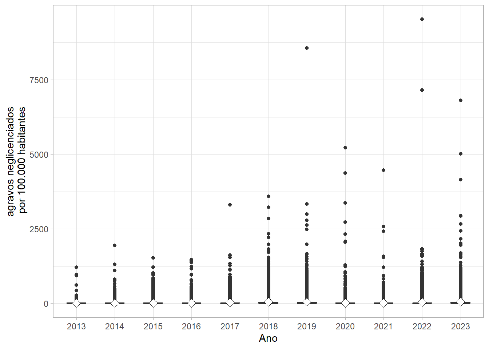
ggplot(banco) +
aes(x = ano, y = agravo_indicador) +
geom_boxplot(fill = c("dark blue"), width = 0.5, outlier.shape = NA) +
stat_summary(
fun = "mean", geom = "point", shape = 23, size = 3, fill = "white"
) +
coord_cartesian(ylim=c(0, 200))+
labs(x = "Ano", y = "agravos neglicenciados\n por 100.000 habitantes") +
theme_light()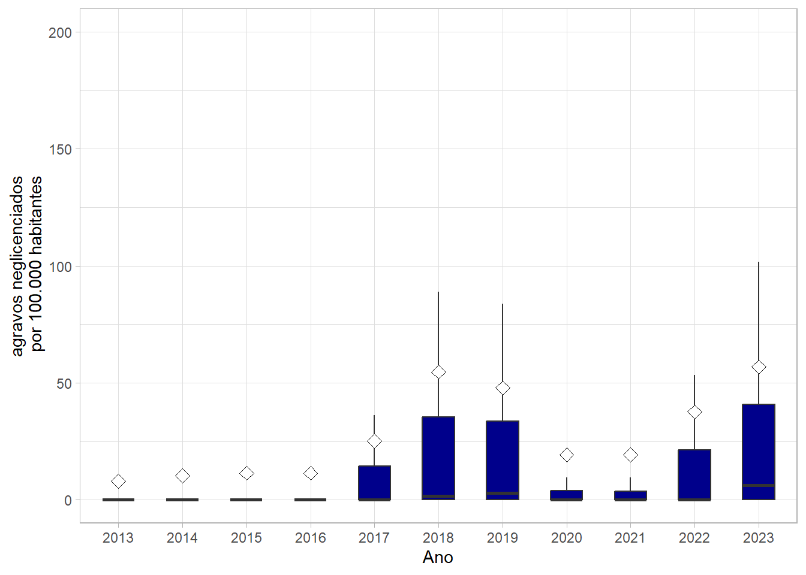
quadro(agravo_indicador) # A tibble: 11 × 9
ano média `desvio padrão` máximo `1_quartil` mediana `3_quartil` assimetria
<chr> <dbl> <dbl> <dbl> <dbl> <dbl> <dbl> <dbl>
1 2013 8.05 64.9 1207. 0 0 0 13.6
2 2014 10.3 68.9 1937. 0 0 0 15.6
3 2015 11.5 62.8 1532. 0 0 0 11.4
4 2016 11.5 68.9 1470. 0 0 0 13.3
5 2017 25.3 94.5 3308. 0 0 14.5 13.5
6 2018 54.7 168. 3585. 0 1.71 35.6 8.28
7 2019 47.9 187. 8564. 0 2.90 33.6 22.4
8 2020 19.3 143. 5217. 0 0 3.81 22.5
9 2021 19.3 111. 4467. 0 0 3.80 20.8
10 2022 37.6 196. 9522. 0 0 21.3 31.1
11 2023 56.8 204. 6805. 0 6.32 40.7 14.7
# ℹ 1 more variable: curtose <dbl>banco %>%
group_by(uf) %>%
summarise(`Média de agravo` = mean(agravo_indicador)) %>%
arrange(desc(`Média de agravo`)) %>%
head(10) %>%
kable(caption = "10 UFs com maior média de agravos por 100.000 habitantes", col.names = c("UF", "Média Agravo"))| UF | Média Agravo |
|---|---|
| AM | 94.62655 |
| AL | 89.88990 |
| MG | 46.81703 |
| PE | 46.61969 |
| CE | 42.35827 |
| MT | 41.91309 |
| MA | 35.30984 |
| PA | 32.81917 |
| TO | 32.20780 |
| PI | 31.52319 |
Alimentação saudável
ggplot(banco) +
aes(x = ano, y = alimentacao_indicador) +
geom_boxplot(fill = c("dark blue"), width = 0.5) +
stat_summary(
fun = "mean", geom = "point", shape = 23, size = 3, fill = "white"
)+
labs(x = "Ano", y = "alimentação saudável\n por 100.000 habitantes") +
theme_light()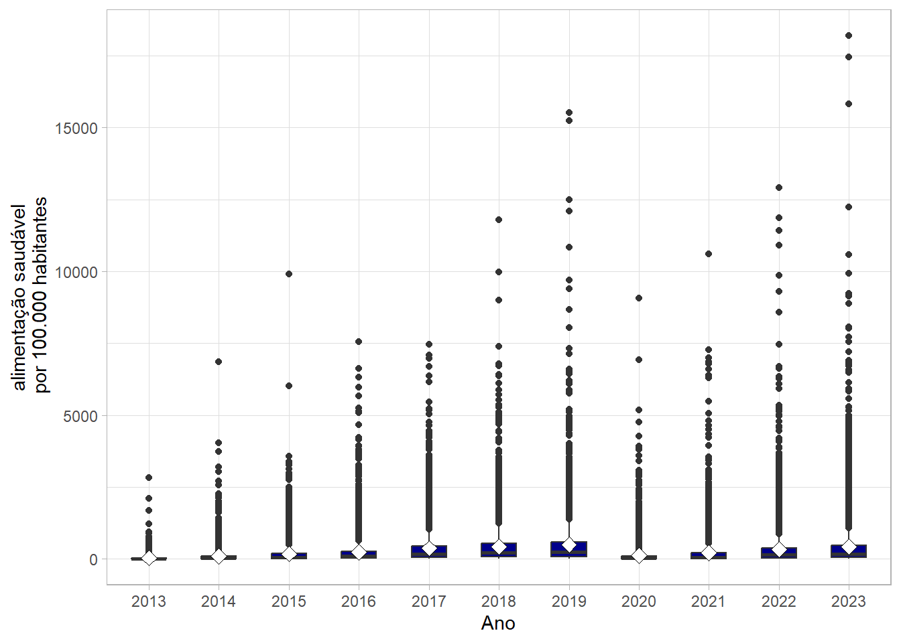
ggplot(banco) +
aes(x = ano, y = alimentacao_indicador) +
geom_boxplot(fill = c("dark blue"), width = 0.5, outlier.shape = NA) +
stat_summary(
fun = "mean", geom = "point", shape = 23, size = 3, fill = "white"
) +
coord_cartesian(ylim=c(0, 1500))+
labs(x = "Ano", y = "alimentação saudável\n por 100.000 habitantes") +
theme_light()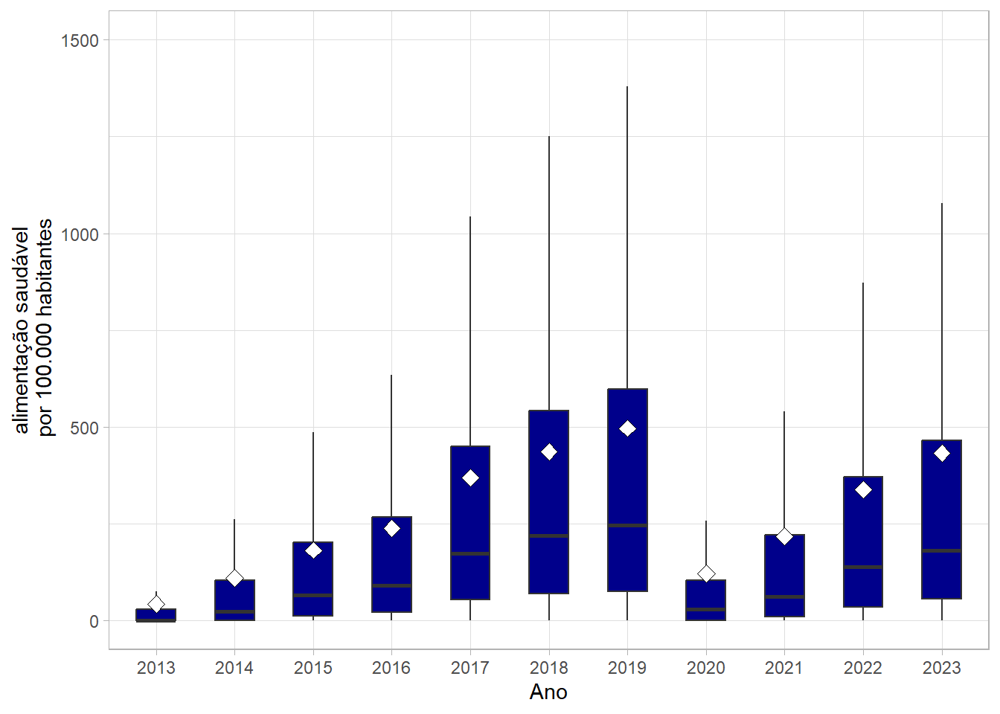
quadro(alimentacao_indicador)# A tibble: 11 × 9
ano média `desvio padrão` máximo `1_quartil` mediana `3_quartil` assimetria
<chr> <dbl> <dbl> <dbl> <dbl> <dbl> <dbl> <dbl>
1 2013 43.4 150. 2837. 0 0 30.3 10.1
2 2014 110. 288. 6843. 0 22.8 105. 9.26
3 2015 182. 363. 9908. 12.7 66.4 203. 8.15
4 2016 239. 475. 7559. 22.0 91.5 268. 6.29
5 2017 370. 583. 7463. 53.9 174. 450. 4.33
6 2018 436. 678. 11797. 69.6 219. 542. 4.98
7 2019 497. 837. 15514. 75.8 247. 598. 6.38
8 2020 121. 340. 9072. 0 29.0 104. 10.3
9 2021 218. 499. 10610. 9.65 61.2 222. 7.62
10 2022 339. 687. 12902. 36.1 139. 372. 7.47
11 2023 433. 881. 18189. 56.4 182. 466. 7.83
# ℹ 1 more variable: curtose <dbl>banco %>%
group_by(uf) %>%
summarise(`Média de alimentacao` = mean(alimentacao_indicador)) %>%
arrange(desc(`Média de alimentacao`)) %>%
head(10) %>%
kable(caption = "10 UFs com maior média de alimentacao por 100.000 habitantes", col.names = c("UF", "Média alimentacao"))| UF | Média alimentacao |
|---|---|
| AL | 542.7067 |
| MG | 539.7857 |
| AM | 388.0099 |
| RS | 366.4856 |
| GO | 361.7034 |
| TO | 322.2241 |
| PI | 313.1994 |
| PE | 303.1462 |
| PB | 280.8006 |
| CE | 265.0042 |
Autocuidado de pessoas com doenças
ggplot(banco) +
aes(x = ano, y = autocuidado_indicador) +
geom_boxplot(fill = c("dark blue"), width = 0.5) +
stat_summary(
fun = "mean", geom = "point", shape = 23, size = 3, fill = "white"
)+
labs(x = "Ano", y = "ações de autocuidado \n por 100.000 habitantes") +
theme_light()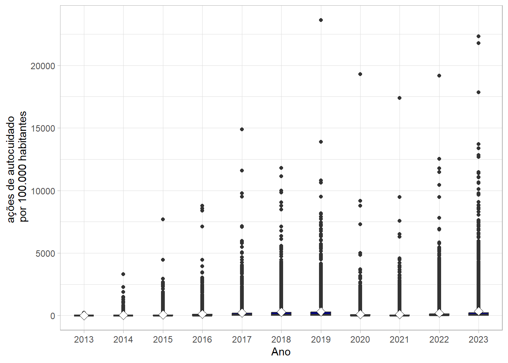
ggplot(banco) +
aes(x = ano, y = autocuidado_indicador) +
geom_boxplot(fill = c("dark blue"), width = 0.5, outlier.shape = NA) +
stat_summary(
fun = "mean", geom = "point", shape = 23, size = 3, fill = "white"
) +
coord_cartesian(ylim=c(0, 800))+
labs(x = "Ano", y = "Ações de autocuidado \n por 100.000 habitantes") +
theme_light()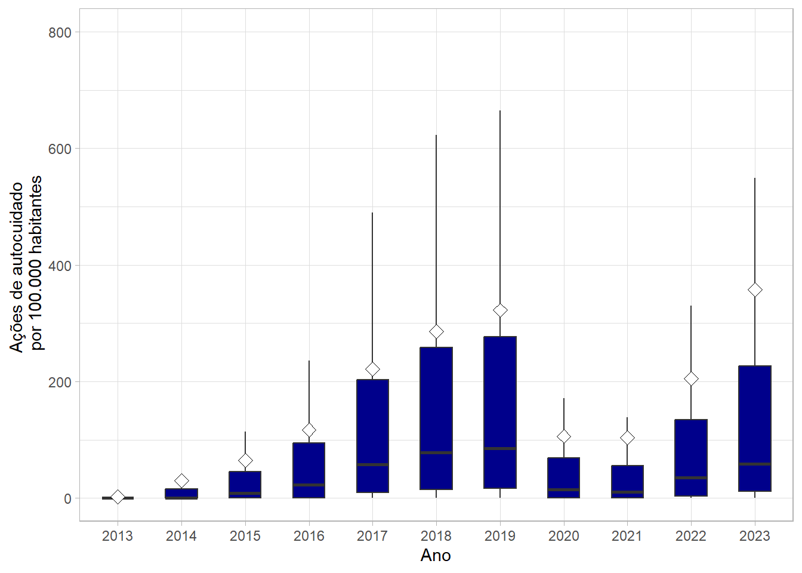
quadro(autocuidado_indicador)# A tibble: 11 × 9
ano média `desvio padrão` máximo `1_quartil` mediana `3_quartil`
<chr> <dbl> <dbl> <dbl> <dbl> <dbl> <dbl>
1 2013 2.14 13.6 213. 0 0 0
2 2014 30.4 124. 3303. 0 0 15.3
3 2015 64.6 224. 7685. 0 8.92 45.6
4 2016 117. 364. 8783. 0 23.2 94.4
5 2017 221. 591. 14881. 10.1 58.2 203.
6 2018 286. 679. 11804. 15.1 78.0 259.
7 2019 323. 837. 23615. 17.0 85.1 277.
8 2020 106. 447. 19289. 0 15.1 69.2
9 2021 104. 452. 17386. 0 10.9 55.4
10 2022 205. 693. 19185. 3.61 35.1 134.
11 2023 358. 1104. 22308. 11.6 58.7 227.
# ℹ 2 more variables: assimetria <dbl>, curtose <dbl>banco %>%
group_by(uf) %>%
summarise(`Média de agravo` = mean(autocuidado_indicador)) %>%
arrange(desc(`Média de agravo`)) %>%
head(10) %>%
kable(caption = "10 UFs com maior média de ações de autocuidado por 100.000 habitantes", col.names = c("UF", "Média Autocuidado"))| UF | Média Autocuidado |
|---|---|
| MG | 388.6747 |
| SC | 247.2616 |
| GO | 243.0693 |
| RS | 232.7296 |
| TO | 215.7645 |
| AL | 190.7134 |
| SP | 189.8866 |
| MT | 162.5645 |
| PI | 151.2948 |
| MS | 136.1506 |
Ações de combate ao Aedes aegypt
ggplot(banco) +
aes(x = ano, y = acoes_indicador) +
geom_boxplot(fill = c("dark blue"), width = 0.5) +
stat_summary(
fun = "mean", geom = "point", shape = 23, size = 3, fill = "white"
)+
labs(x = "Ano", y = "Ações de combate ao Aedes Aegypt \npor 100.000 habitantes") +
theme_light()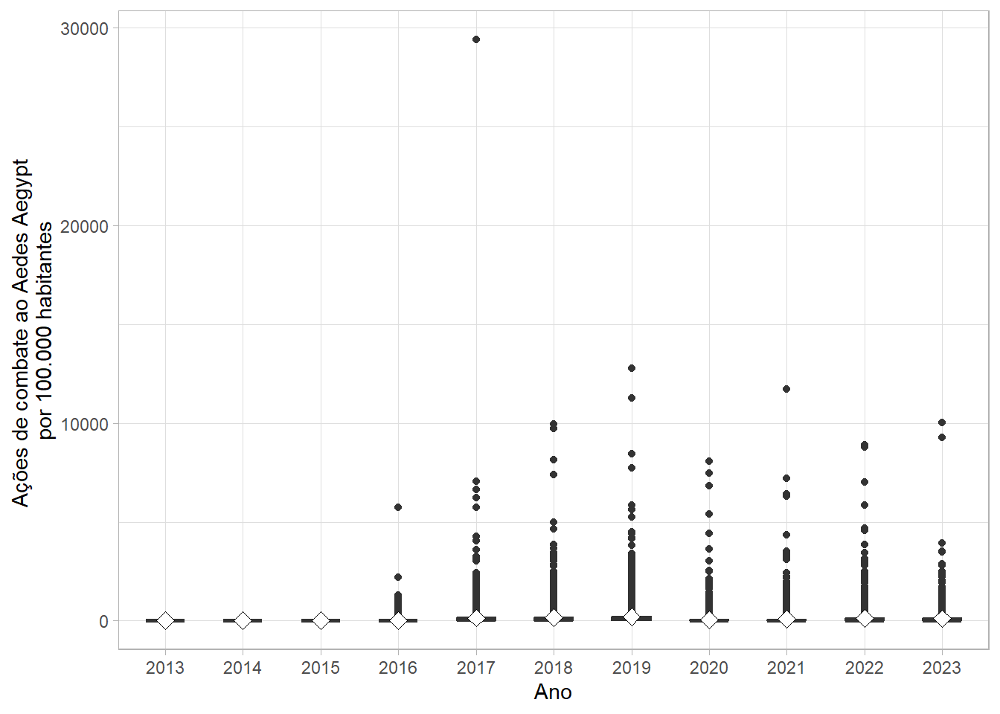
ggplot(banco) +
aes(x = ano, y = acoes_indicador) +
geom_boxplot(fill = c("dark blue"), width = 0.5, outlier.shape = NA) +
stat_summary(
fun = "mean", geom = "point", shape = 23, size = 3, fill = "white"
) +
coord_cartesian(ylim=c(0, 600))+
labs(x = "Ano", y = "Ações de combate ao Aedes Aegypt \npor 100.000 habitantes") +
theme_light()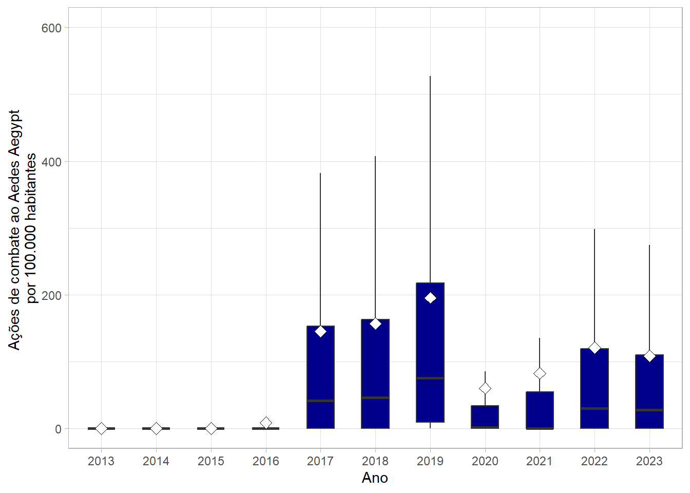
quadro(acoes_indicador)# A tibble: 11 × 9
ano média `desvio padrão` máximo `1_quartil` mediana `3_quartil`
<chr> <dbl> <dbl> <dbl> <dbl> <dbl> <dbl>
1 2013 0 0 0 0 0 0
2 2014 0 0 0 0 0 0
3 2015 0.00454 0.290 19.3 0 0 0
4 2016 8.59 101. 5741. 0 0 0
5 2017 145. 511. 29409. 0 42.0 153.
6 2018 157. 388. 9950. 0 46.4 163.
7 2019 196. 456. 12783. 9.66 75.9 217.
8 2020 60.6 274. 8058. 0 1.61 34.3
9 2021 82.8 324. 11739. 0 0 54.7
10 2022 121. 334. 8903. 0 30.3 120.
11 2023 109. 291. 10038. 0 28.0 110.
# ℹ 2 more variables: assimetria <dbl>, curtose <dbl>banco %>%
group_by(uf) %>%
summarise(`Média de agravo` = mean(acoes_indicador)) %>%
arrange(desc(`Média de agravo`)) %>%
head(10) %>%
kable(caption = "10 UFs com maior média de Ações de combate ao Aedes Aegypt por 100.000 habitantes", col.names = c("UF", "Média Ações"))| UF | Média Ações |
|---|---|
| AL | 187.39116 |
| RS | 167.70391 |
| AM | 142.89538 |
| GO | 136.37930 |
| MT | 126.33296 |
| CE | 109.88190 |
| RO | 108.35433 |
| MG | 108.18938 |
| TO | 95.90684 |
| MA | 84.76395 |
Cidadania e direitos humanos
ggplot(banco) +
aes(x = ano, y = cidadania_indicador) +
geom_boxplot(fill = c("dark blue"), width = 0.5) +
stat_summary(
fun = "mean", geom = "point", shape = 23, size = 3, fill = "white"
)+
labs(x = "Ano", y = "Ações de Cidadania \npor 100.000 habitantes") +
theme_light()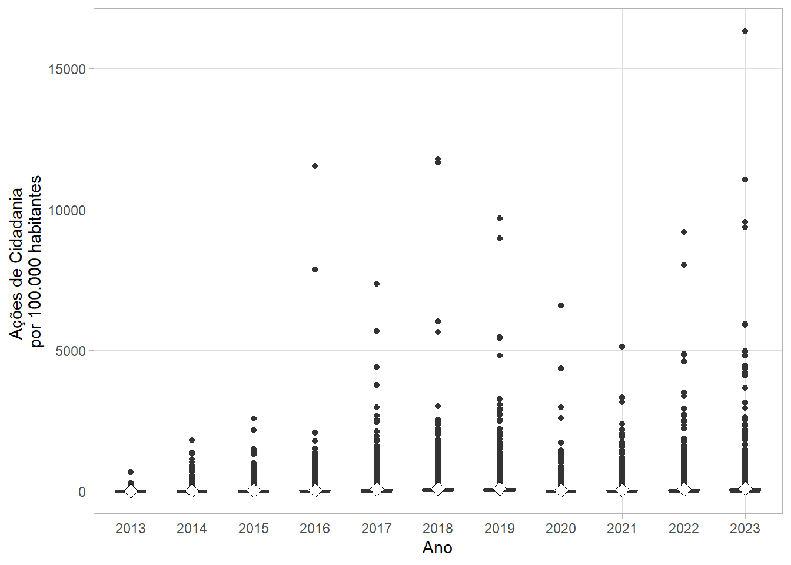
ggplot(banco) +
aes(x = ano, y = cidadania_indicador) +
geom_boxplot(fill = c("dark blue"), width = 0.5, outlier.shape = NA) +
stat_summary(
fun = "mean", geom = "point", shape = 23, size = 3, fill = "white"
) +
coord_cartesian(ylim=c(0, 200))+
labs(x = "Ano", y = "Ações de Cidadania \npor 100.000 habitantes") +
theme_light()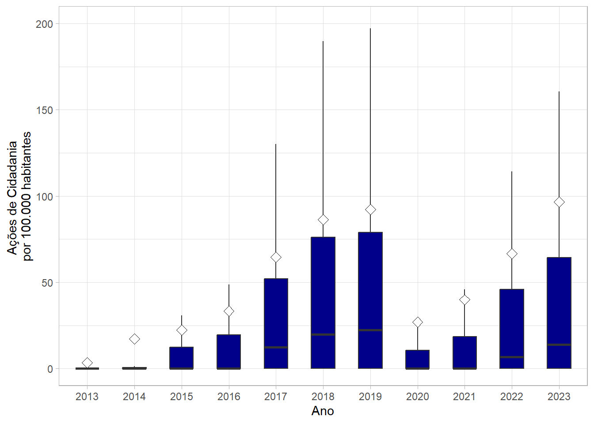
quadro(cidadania_indicador) # A tibble: 11 × 9
ano média `desvio padrão` máximo `1_quartil` mediana `3_quartil` assimetria
<chr> <dbl> <dbl> <dbl> <dbl> <dbl> <dbl> <dbl>
1 2013 3.50 27.5 673. 0 0 0 15.6
2 2014 17.3 80.7 1813. 0 0 0.568 11.4
3 2015 22.3 99.1 2587. 0 0 12.3 13.3
4 2016 33.4 222. 11537. 0 0 19.5 37.3
5 2017 64.6 223. 7356. 0 12.4 52.1 14.9
6 2018 86.4 316. 11797. 0 19.9 76.0 22.2
7 2019 92.2 302. 9681. 0 22.5 78.9 15.7
8 2020 27.0 156. 6581. 0 0 10.5 23.6
9 2021 39.9 171. 5120. 0 0 18.4 13.3
10 2022 66.6 271. 9209. 0 6.64 45.9 17.3
11 2023 96.7 437. 16320. 0 13.8 64.4 19.3
# ℹ 1 more variable: curtose <dbl>banco %>%
group_by(uf) %>%
summarise(`Média de agravo` = mean(cidadania_indicador)) %>%
arrange(desc(`Média de agravo`)) %>%
head(10) %>%
kable(caption = "10 UFs com maior média de Ações de Cidadania por 100.000 habitantes", col.names = c("UF", "Média Ações"))| UF | Média Ações |
|---|---|
| AM | 114.09374 |
| MG | 97.68653 |
| AL | 89.14643 |
| GO | 80.22907 |
| RS | 76.60108 |
| TO | 73.25584 |
| MT | 63.91529 |
| RN | 56.91270 |
| CE | 51.58832 |
| PI | 50.20940 |
Dependência química / tabaco
ggplot(banco) +
aes(x = ano, y = dependencia_indicador) +
geom_boxplot(fill = c("dark blue"), width = 0.5) +
stat_summary(
fun = "mean", geom = "point", shape = 23, size = 3, fill = "white"
)+
labs(x = "Ano", y = "Ações contra dependência química \npor 100.000 habitantes") +
theme_light()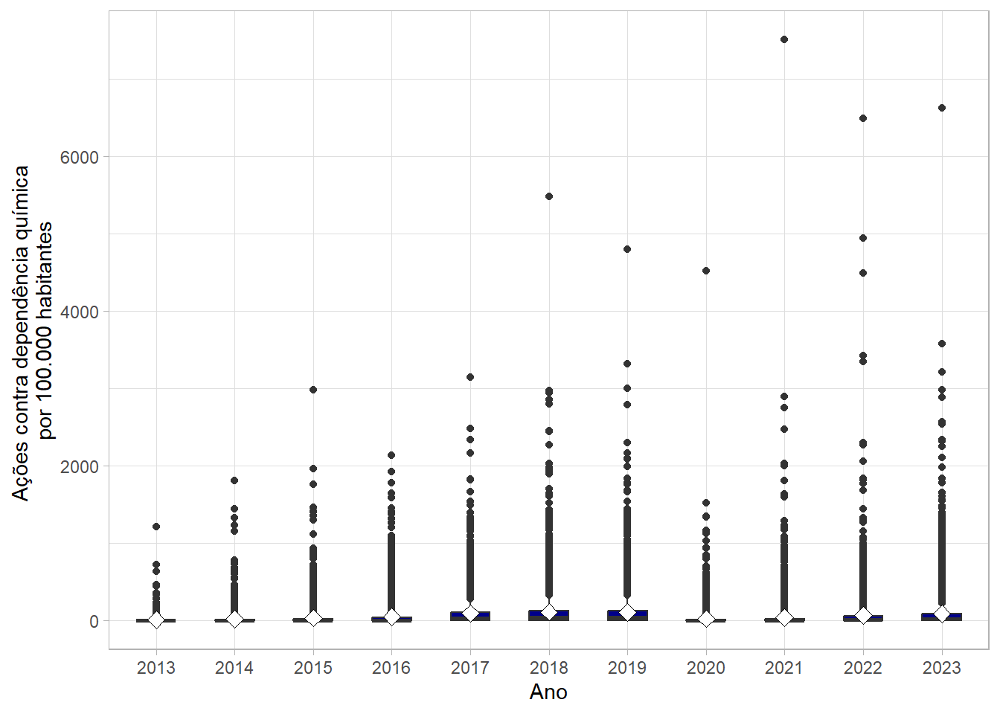
ggplot(banco) +
aes(x = ano, y = dependencia_indicador) +
geom_boxplot(fill = c("dark blue"), width = 0.5, outlier.shape = NA) +
stat_summary(
fun = "mean", geom = "point", shape = 23, size = 3, fill = "white"
) +
coord_cartesian(ylim=c(0, 350))+
labs(x = "Ano", y = "Ações contra dependência química \npor 100.000 habitantes") +
theme_light()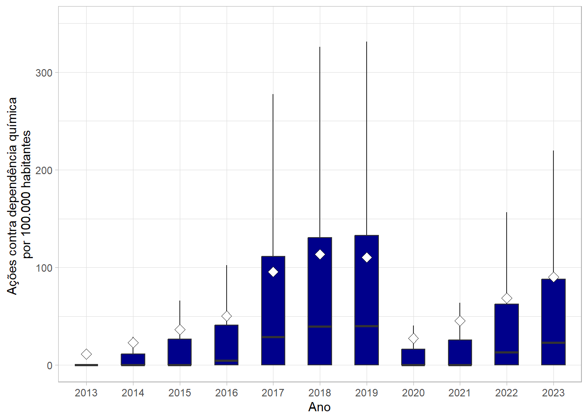
quadro(dependencia_indicador)# A tibble: 11 × 9
ano média `desvio padrão` máximo `1_quartil` mediana `3_quartil` assimetria
<chr> <dbl> <dbl> <dbl> <dbl> <dbl> <dbl> <dbl>
1 2013 11.4 56.3 1212. 0 0 0 12.3
2 2014 23.1 88.7 1810. 0 0 11.5 10.0
3 2015 36.5 116. 2981. 0 0 26.5 9.67
4 2016 50.2 133. 2134. 0 4.46 41.1 6.53
5 2017 95.7 184. 3148. 0 29.0 111. 4.86
6 2018 113. 224. 5478. 0 39.7 130. 6.89
7 2019 110. 211. 4793. 0 40.1 133. 6.53
8 2020 27.5 106. 4522. 0 0 16.3 19.3
9 2021 45.3 179. 7505. 0 0 25.6 18.9
10 2022 68.7 204. 6490. 0 13.0 62.6 14.0
11 2023 90.1 224. 6622. 0 22.8 88.0 9.65
# ℹ 1 more variable: curtose <dbl>banco %>%
group_by(uf) %>%
summarise(`Média de agravo` = mean(dependencia_indicador)) %>%
arrange(desc(`Média de agravo`)) %>%
head(10) %>%
kable(caption = "10 UFs com maior média de Ações contra dependência química por 100.000 habitantes", col.names = c("UF", "Média Ações"))| UF | Média Ações |
|---|---|
| MG | 146.93142 |
| RS | 91.57771 |
| AM | 86.95773 |
| GO | 76.36243 |
| SC | 74.28644 |
| RO | 70.89590 |
| TO | 70.87137 |
| AL | 69.32284 |
| MT | 65.09259 |
| RN | 61.55464 |
Envelhecimento / Climatério
ggplot(banco) +
aes(x = ano, y = envelhecimento_indicador) +
geom_boxplot(fill = c("dark blue"), width = 0.5) +
stat_summary(
fun = "mean", geom = "point", shape = 23, size = 3, fill = "white"
)+
labs(x = "Ano", y = "Ações contra Envelhecimento \npor 100.000 habitantes") +
theme_light()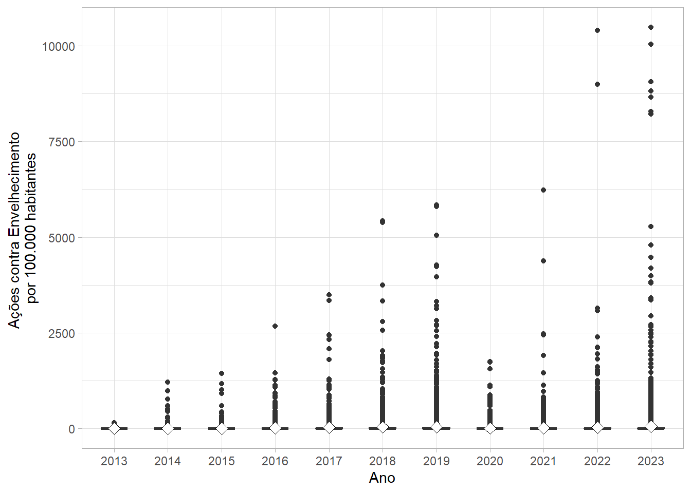
ggplot(banco) +
aes(x = ano, y = envelhecimento_indicador) +
geom_boxplot(fill = c("dark blue"), width = 0.5, outlier.shape = NA) +
stat_summary(
fun = "mean", geom = "point", shape = 23, size = 3, fill = "white"
) +
coord_cartesian(ylim=c(0, 100))+
labs(x = "Ano", y = "Ações contra Envelhecimento \npor 100.000 habitantes") +
theme_light()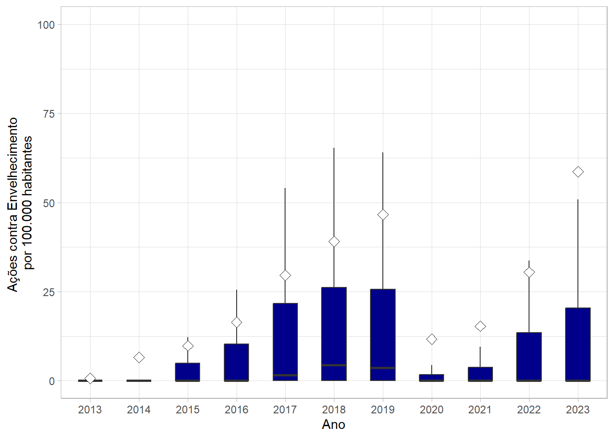
quadro(envelhecimento_indicador)# A tibble: 11 × 9
ano média `desvio padrão` máximo `1_quartil` mediana `3_quartil`
<chr> <dbl> <dbl> <dbl> <dbl> <dbl> <dbl>
1 2013 0.694 6.50 148. 0 0 0
2 2014 6.56 42.8 1211. 0 0 0
3 2015 9.83 45.1 1444. 0 0 4.91
4 2016 16.4 76.3 2681. 0 0 10.2
5 2017 29.6 122. 3492. 0 1.53 21.7
6 2018 39.1 182. 5420. 0 4.46 26.2
7 2019 46.6 236. 5837. 0 3.62 25.6
8 2020 11.7 71.3 1749. 0 0 1.74
9 2021 15.3 134. 6226. 0 0 3.81
10 2022 30.5 227. 10403. 0 0 13.5
11 2023 58.7 403. 10482. 0 0 20.3
# ℹ 2 more variables: assimetria <dbl>, curtose <dbl>banco %>%
group_by(uf) %>%
summarise(`Média de agravo` = mean(envelhecimento_indicador)) %>%
arrange(desc(`Média de agravo`)) %>%
head(10) %>%
kable(caption = "10 UFs com maior média de Ações contra Envelhecimento por 100.000 habitantes", col.names = c("UF", "Média Ações"))| UF | Média Ações |
|---|---|
| MG | 53.39146 |
| TO | 46.28564 |
| RS | 41.86697 |
| AM | 33.32595 |
| GO | 32.21577 |
| SP | 28.52609 |
| PI | 28.46430 |
| SE | 26.86542 |
| MT | 23.78203 |
| PB | 21.07080 |
Plantas medicinais / fitoterapia
ggplot(banco) +
aes(x = ano, y = plantas_indicador) +
geom_boxplot(fill = c("dark blue"), width = 0.5) +
stat_summary(
fun = "mean", geom = "point", shape = 23, size = 3, fill = "white"
)+
labs(x = "Ano", y = "Ações de Fitoterapia \npor 100.000 habitantes") +
theme_light()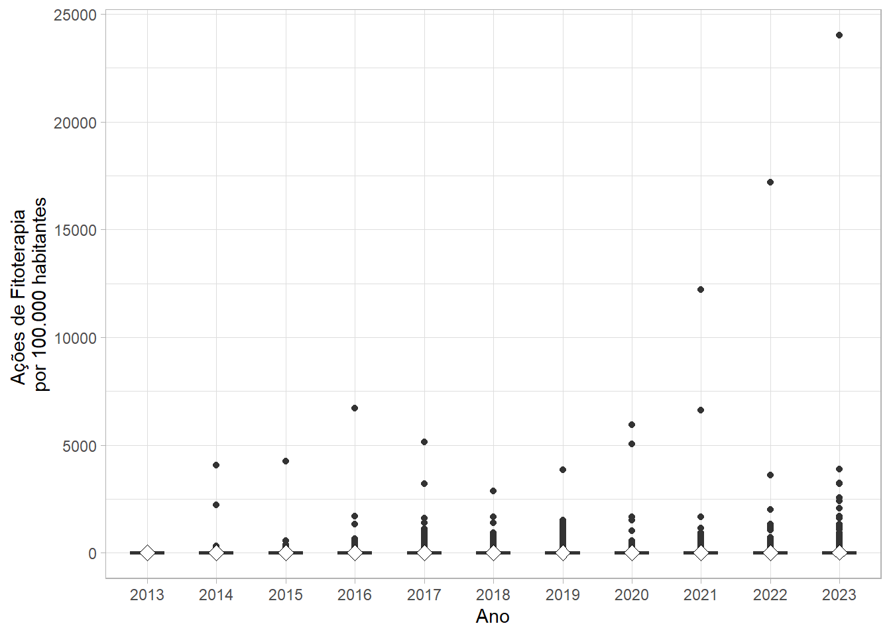
ggplot(banco) +
aes(x = ano, y = plantas_indicador) +
geom_boxplot(fill = c("dark blue"), width = 0.5, outlier.shape = NA) +
stat_summary(
fun = "mean", geom = "point", shape = 23, size = 3, fill = "white"
) +
coord_cartesian(ylim=c(0, 20))+
labs(x = "Ano", y = "Ações de Fitoterapia \npor 100.000 habitantes") +
theme_light()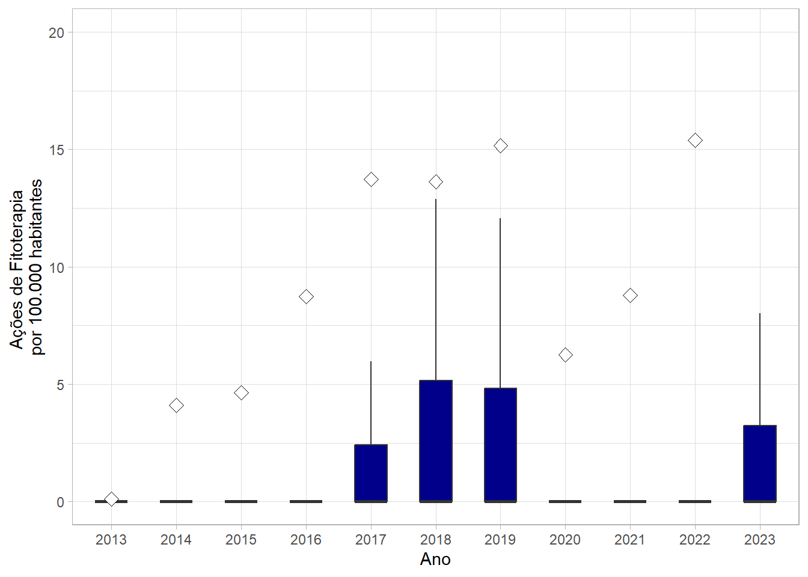
quadro(plantas_indicador)# A tibble: 11 × 9
ano média `desvio padrão` máximo `1_quartil` mediana `3_quartil`
<chr> <dbl> <dbl> <dbl> <dbl> <dbl> <dbl>
1 2013 0.111 1.23 26.4 0 0 0
2 2014 4.10 88.2 4079. 0 0 0
3 2015 4.64 67.2 4243. 0 0 0
4 2016 8.74 104. 6718. 0 0 0
5 2017 13.7 103. 5147. 0 0 2.42
6 2018 13.6 70.3 2870. 0 0 5.16
7 2019 15.2 88.8 3865. 0 0 4.83
8 2020 6.27 119. 5949. 0 0 0
9 2021 8.79 201. 12223. 0 0 0
10 2022 15.4 248. 17178. 0 0 0
11 2023 25.8 350. 24007. 0 0 3.24
# ℹ 2 more variables: assimetria <dbl>, curtose <dbl>banco %>%
group_by(uf) %>%
summarise(`Média de agravo` = mean(plantas_indicador)) %>%
arrange(desc(`Média de agravo`)) %>%
head(10) %>%
kable(caption = "10 UFs com maior média de Ações de Fitoterapia por 100.000 habitantes", col.names = c("UF", "Média Ações"))| UF | Média Ações |
|---|---|
| RS | 52.918075 |
| SC | 22.064663 |
| MG | 17.166434 |
| AL | 16.176861 |
| AM | 11.072779 |
| PE | 8.789596 |
| PI | 8.509932 |
| DF | 8.422411 |
| RN | 6.939926 |
| PB | 6.718420 |
Prevenção da violência
ggplot(banco) +
aes(x = ano, y = prevencao_indicador) +
geom_boxplot(fill = c("dark blue"), width = 0.5) +
stat_summary(
fun = "mean", geom = "point", shape = 23, size = 3, fill = "white"
)+
labs(x = "Ano", y = "Ações de prevenção da violência \npor 100.000 habitantes") +
theme_light()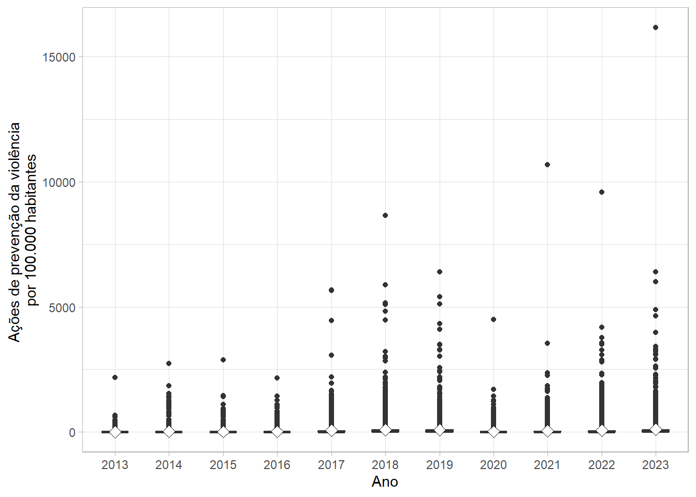
ggplot(banco) +
aes(x = ano, y = prevencao_indicador) +
geom_boxplot(fill = c("dark blue"), width = 0.5, outlier.shape = NA) +
stat_summary(
fun = "mean", geom = "point", shape = 23, size = 3, fill = "white"
) +
coord_cartesian(ylim=c(0, 250))+
labs(x = "Ano", y = "Ações de prevenção da violência \npor 100.000 habitantes") +
theme_light()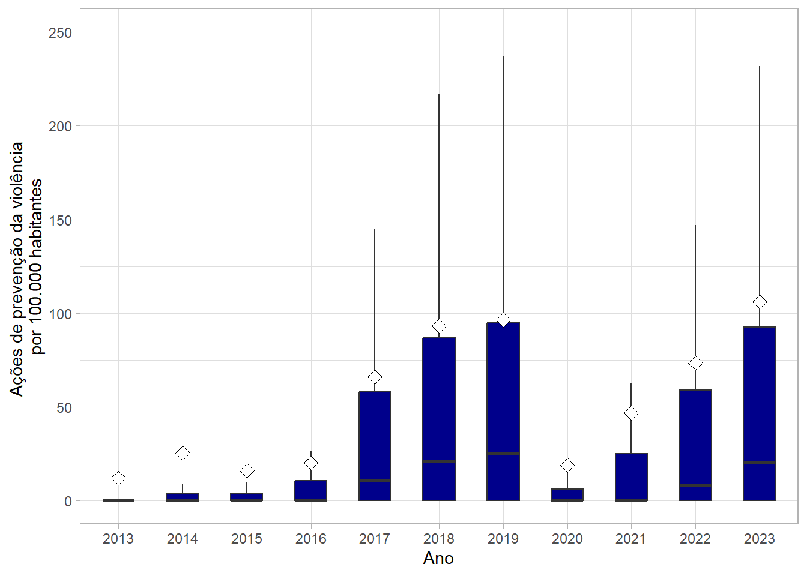
quadro(prevencao_indicador)# A tibble: 11 × 9
ano média `desvio padrão` máximo `1_quartil` mediana `3_quartil` assimetria
<chr> <dbl> <dbl> <dbl> <dbl> <dbl> <dbl> <dbl>
1 2013 12.1 80.4 2175. 0 0 0 17.8
2 2014 25.3 121. 2729. 0 0 3.62 10.9
3 2015 16.2 82.4 2879. 0 0 3.92 16.4
4 2016 20.1 77.1 2154. 0 0 10.5 11.1
5 2017 66.0 201. 5681. 0 10.7 58.0 13.0
6 2018 93.4 285. 8642. 0 20.9 87.0 12.8
7 2019 96.5 262. 6396. 0 25.5 95.0 10.6
8 2020 19.1 100. 4493. 0 0 6.06 22.6
9 2021 46.9 210. 10672. 0 0 25.0 28.9
10 2022 73.6 250. 9586. 0 8.56 58.9 15.8
11 2023 106. 360. 16153. 0 20.7 92.7 21.0
# ℹ 1 more variable: curtose <dbl>banco %>%
group_by(uf) %>%
summarise(`Média de agravo` = mean(prevencao_indicador)) %>%
arrange(desc(`Média de agravo`)) %>%
head(10) %>%
kable(caption = "10 UFs com maior média de Ações de prevenção da violência por 100.000 habitantes", col.names = c("UF", "Média Ações"))| UF | Média Ações |
|---|---|
| MG | 131.55317 |
| AM | 102.20486 |
| AL | 81.53422 |
| RS | 80.63193 |
| CE | 59.69755 |
| TO | 57.14950 |
| RN | 56.17494 |
| RO | 55.43743 |
| SC | 54.02277 |
| GO | 53.01928 |
Saúde ambiental
ggplot(banco) +
aes(x = ano, y = ambiental_indicador) +
geom_boxplot(fill = c("dark blue"), width = 0.5) +
stat_summary(
fun = "mean", geom = "point", shape = 23, size = 3, fill = "white"
)+
labs(x = "Ano", y = "Ações de Saúde Ambiental \npor 100.000 habitantes") +
theme_light()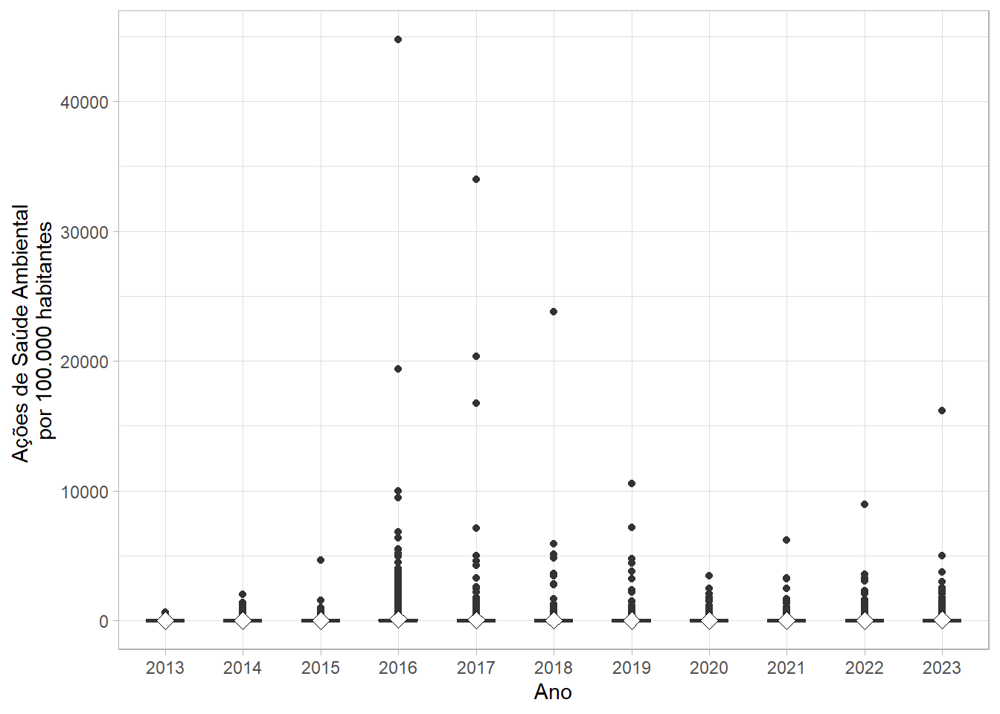
ggplot(banco) +
aes(x = ano, y = ambiental_indicador) +
geom_boxplot(fill = c("dark blue"), width = 0.5, outlier.shape = NA) +
stat_summary(
fun = "mean", geom = "point", shape = 23, size = 3, fill = "white"
) +
coord_cartesian(ylim=c(0, 160))+
labs(x = "Ano", y = "Ações de Saúde Ambiental \npor 100.000 habitantes") +
theme_light()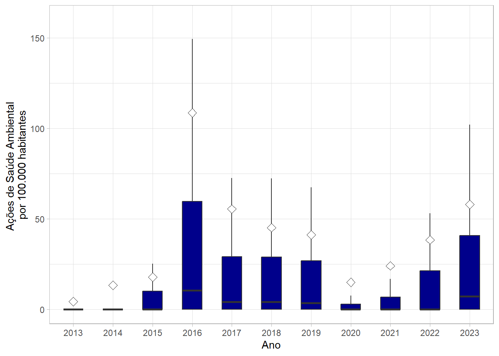
quadro(ambiental_indicador)# A tibble: 11 × 9
ano média `desvio padrão` máximo `1_quartil` mediana `3_quartil`
<chr> <dbl> <dbl> <dbl> <dbl> <dbl> <dbl>
1 2013 4.41 35.5 638. 0 0 0
2 2014 13.4 71.7 2019. 0 0 0
3 2015 17.9 93.7 4686. 0 0 10.1
4 2016 109. 785. 44745. 0 10.5 59.8
5 2017 55.5 615. 33965. 0 4.14 29.1
6 2018 45.2 378. 23768. 0 4.14 29.0
7 2019 41.3 240. 10580. 0 3.62 27.0
8 2020 15.1 104. 3464. 0 0 3.04
9 2021 24.1 142. 6210. 0 0 6.86
10 2022 38.5 187. 8958. 0 0 21.3
11 2023 58.1 281. 16195. 0 7.31 40.9
# ℹ 2 more variables: assimetria <dbl>, curtose <dbl>banco %>%
group_by(uf) %>%
summarise(`Média de agravo` = mean(ambiental_indicador)) %>%
arrange(desc(`Média de agravo`)) %>%
head(10) %>%
kable(caption = "10 UFs com maior média de Ações de Saúde Ambiental por 100.000 habitantes", col.names = c("UF", "Média Ações"))| UF | Média Ações |
|---|---|
| RS | 111.10149 |
| AM | 86.41426 |
| AL | 72.39078 |
| MG | 59.33310 |
| MT | 56.78231 |
| GO | 56.60904 |
| RO | 51.34444 |
| TO | 42.09828 |
| AP | 38.48510 |
| SC | 31.69197 |
Saúde bucal
ggplot(banco) +
aes(x = ano, y = bucal_indicador) +
geom_boxplot(fill = c("dark blue"), width = 0.5) +
stat_summary(
fun = "mean", geom = "point", shape = 23, size = 3, fill = "white"
)+
labs(x = "Ano", y = "Ações de saúde bucal \npor 100.000 habitantes") +
theme_light()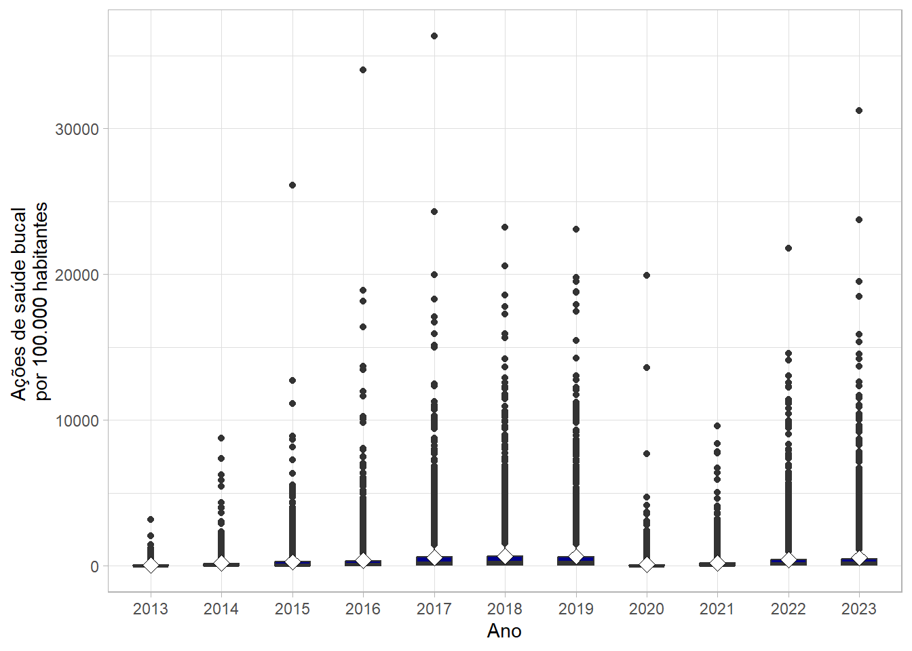
ggplot(banco) +
aes(x = ano, y = bucal_indicador) +
geom_boxplot(fill = c("dark blue"), width = 0.5, outlier.shape = NA) +
stat_summary(
fun = "mean", geom = "point", shape = 23, size = 3, fill = "white"
) +
coord_cartesian(ylim=c(0, 1700))+
labs(x = "Ano", y = "Ações de saúde bucal \npor 100.000 habitantes") +
theme_light()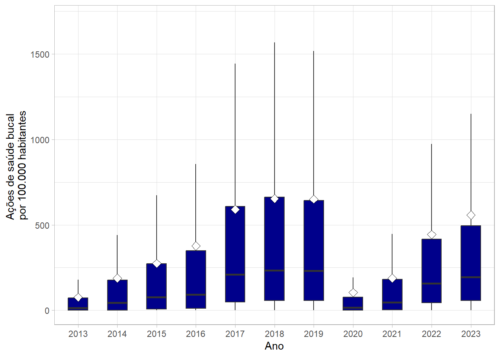
quadro(bucal_indicador)# A tibble: 11 × 9
ano média `desvio padrão` máximo `1_quartil` mediana `3_quartil` assimetria
<chr> <dbl> <dbl> <dbl> <dbl> <dbl> <dbl> <dbl>
1 2013 76.0 188. 3189. 0 13.6 71.9 7.08
2 2014 187. 454. 8768. 0 43.5 176. 7.99
3 2015 274. 726. 26110. 7.25 76.2 274. 14.8
4 2016 377. 1047. 34006. 11.0 91.9 350. 12.6
5 2017 591. 1355. 36338. 48.9 211. 609. 9.13
6 2018 654. 1385. 23246. 58.0 234. 662. 6.17
7 2019 650. 1411. 23067. 58.0 232. 642. 6.43
8 2020 104. 444. 19913. 0 15.7 76.8 26.3
9 2021 189. 471. 9592. 2.52 47.1 181. 8.48
10 2022 444. 1018. 21803. 44.1 158. 416. 7.52
11 2023 557. 1356. 31217. 57.6 195. 495. 8.16
# ℹ 1 more variable: curtose <dbl>banco %>%
group_by(uf) %>%
summarise(`Média de agravo` = mean(bucal_indicador)) %>%
arrange(desc(`Média de agravo`)) %>%
head(10) %>%
kable(caption = "10 UFs com maior média de Ações de saúde bucal por 100.000 habitantes", col.names = c("UF", "Média Ações"))| UF | Média Ações |
|---|---|
| PR | 755.8982 |
| AL | 683.7853 |
| SC | 642.7915 |
| MG | 614.6543 |
| TO | 589.5416 |
| RS | 462.4981 |
| MS | 449.5515 |
| MT | 446.5745 |
| AM | 439.4657 |
| PE | 378.4199 |
Saúde do trabalhador
ggplot(banco) +
aes(x = ano, y = trabalhador_indicador) +
geom_boxplot(fill = c("dark blue"), width = 0.5) +
stat_summary(
fun = "mean", geom = "point", shape = 23, size = 3, fill = "white"
)+
labs(x = "Ano", y = "Ações de saúde do trabalhador \npor 100.000 habitantes") +
theme_light()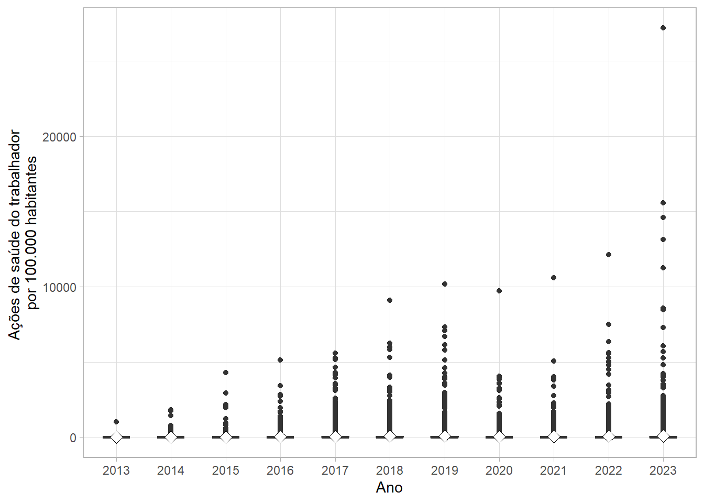
ggplot(banco) +
aes(x = ano, y = trabalhador_indicador) +
geom_boxplot(fill = c("dark blue"), width = 0.5, outlier.shape = NA) +
stat_summary(
fun = "mean", geom = "point", shape = 23, size = 3, fill = "white"
) +
coord_cartesian(ylim=c(0, 120))+
labs(x = "Ano", y = "Ações de saúde do trabalhador \npor 100.000 habitantes") +
theme_light()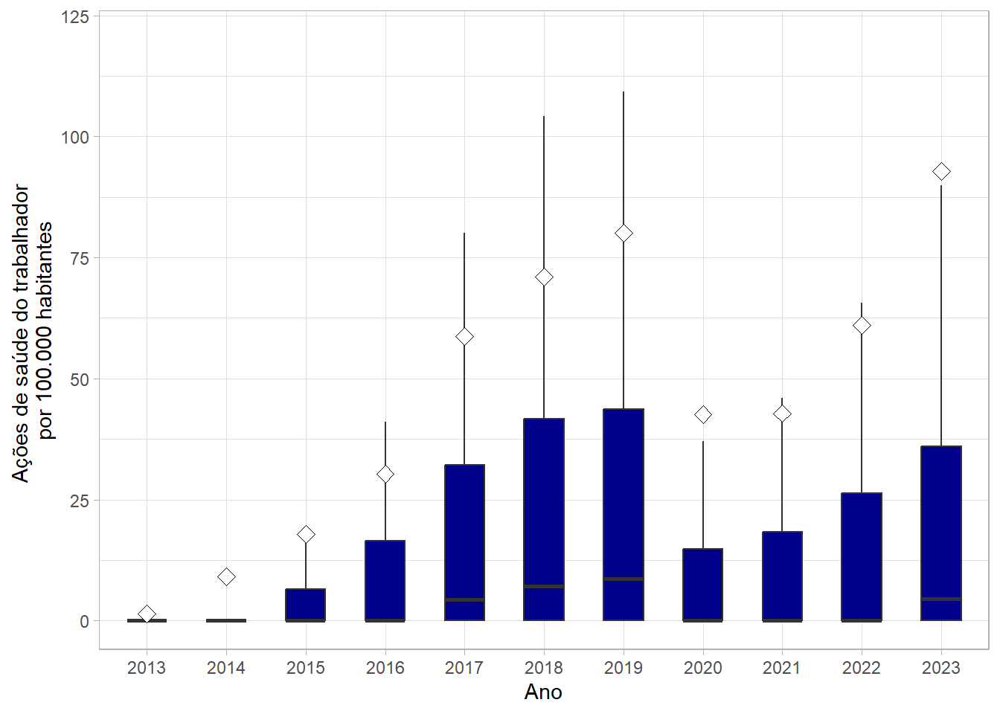
quadro(trabalhador_indicador) # A tibble: 11 × 9
ano média `desvio padrão` máximo `1_quartil` mediana `3_quartil` assimetria
<chr> <dbl> <dbl> <dbl> <dbl> <dbl> <dbl> <dbl>
1 2013 1.49 30.0 1028. 0 0 0 32.7
2 2014 9.15 71.0 1814. 0 0 0 16.8
3 2015 17.8 116. 4278. 0 0 6.44 21.3
4 2016 30.3 150. 5128. 0 0 16.4 17.0
5 2017 58.7 263. 5597. 0 4.33 32.1 12.2
6 2018 71.0 306. 9097. 0 7.12 41.8 13.6
7 2019 80.1 364. 10160. 0 8.70 43.7 13.4
8 2020 42.6 241. 9710. 0 0 14.8 20.1
9 2021 42.8 240. 10610. 0 0 18.4 23.5
10 2022 61.1 339. 12141. 0 0 26.3 17.6
11 2023 92.8 632. 27188. 0 4.47 36.0 24.3
# ℹ 1 more variable: curtose <dbl>banco %>%
group_by(uf) %>%
summarise(`Média de agravo` = mean(trabalhador_indicador)) %>%
arrange(desc(`Média de agravo`)) %>%
head(10) %>%
kable(caption = "10 UFs com maior média de Ações de saúde do trabalhador por 100.000 habitantes", col.names = c("UF", "Média Ações"))| UF | Média Ações |
|---|---|
| MG | 145.58411 |
| AM | 76.84984 |
| RS | 65.26777 |
| TO | 62.38343 |
| GO | 59.79504 |
| SC | 58.33461 |
| AL | 51.29654 |
| RN | 40.75957 |
| MT | 37.68109 |
| MS | 35.90552 |
Saúde mental
ggplot(banco) +
aes(x = ano, y = mental_indicador) +
geom_boxplot(fill = c("dark blue"), width = 0.5) +
stat_summary(
fun = "mean", geom = "point", shape = 23, size = 3, fill = "white"
)+
labs(x = "Ano", y = "Ações de saúde mental \npor 100.000 habitantes") +
theme_light()
ggplot(banco) +
aes(x = ano, y = mental_indicador) +
geom_boxplot(fill = c("dark blue"), width = 0.5, outlier.shape = NA) +
stat_summary(
fun = "mean", geom = "point", shape = 23, size = 3, fill = "white"
) +
coord_cartesian(ylim=c(0, 800))+
labs(x = "Ano", y = "Ações de saúde mental \npor 100.000 habitantes") +
theme_light()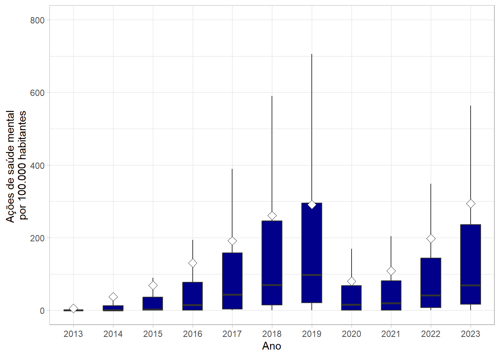
quadro(mental_indicador) # A tibble: 11 × 9
ano média `desvio padrão` máximo `1_quartil` mediana `3_quartil`
<chr> <dbl> <dbl> <dbl> <dbl> <dbl> <dbl>
1 2013 5.16 42.3 943. 0 0 0
2 2014 37.7 224. 9338. 0 0 13.2
3 2015 68.8 245. 6619. 0 2.90 36.2
4 2016 130. 431. 7060. 0 14.5 77.4
5 2017 191. 513. 11250. 3.84 43.5 158.
6 2018 261. 678. 20435. 14.5 70.4 246.
7 2019 291. 658. 14054. 20.7 97.6 295.
8 2020 80.6 234. 5864. 0 15.8 68.0
9 2021 109. 421. 16204. 0 20.0 81.7
10 2022 198. 805. 41062. 7.27 41.8 144.
11 2023 294. 935. 28637. 17.2 69.5 236.
# ℹ 2 more variables: assimetria <dbl>, curtose <dbl>banco %>%
group_by(uf) %>%
summarise(`Média de agravo` = mean(mental_indicador)) %>%
arrange(desc(`Média de agravo`)) %>%
head(10) %>%
kable(caption = "10 UFs com maior média de Ações de saúde mental por 100.000 habitantes", col.names = c("UF", "Média Ações"))| UF | Média Ações |
|---|---|
| RS | 434.1025 |
| MG | 262.7377 |
| SC | 243.8555 |
| GO | 193.1804 |
| SP | 162.2464 |
| AL | 152.2775 |
| TO | 150.9871 |
| MT | 146.2468 |
| AM | 141.2209 |
| PR | 120.5919 |
Saúde sexual e reprodutiva
ggplot(banco) +
aes(x = ano, y = sexual_indicador) +
geom_boxplot(fill = c("dark blue"), width = 0.5) +
stat_summary(
fun = "mean", geom = "point", shape = 23, size = 3, fill = "white"
)+
labs(x = "Ano", y = "ações de saúde sexual e reprodutiva \npor 100.000 habitantes") +
theme_light()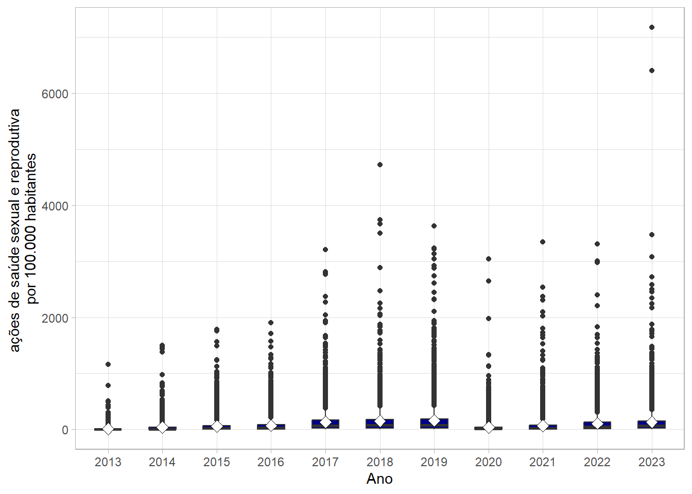
ggplot(banco) +
aes(x = ano, y = sexual_indicador) +
geom_boxplot(fill = c("dark blue"), width = 0.5, outlier.shape = NA) +
stat_summary(
fun = "mean", geom = "point", shape = 23, size = 3, fill = "white"
) +
coord_cartesian(ylim=c(0, 450))+
labs(x = "Ano", y = "ações de saúde sexual e reprodutiva \npor 100.000 habitantes") +
theme_light()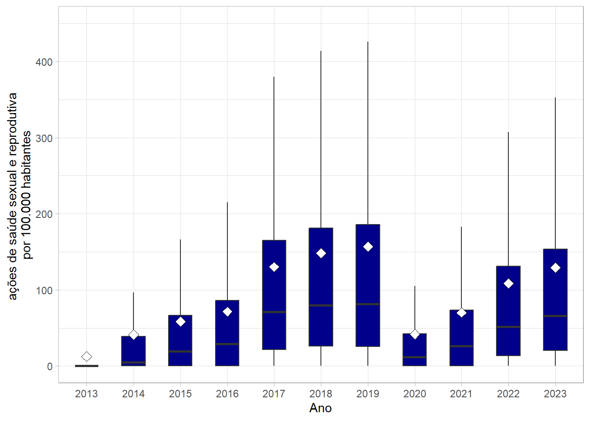
quadro(sexual_indicador)# A tibble: 11 × 9
ano média `desvio padrão` máximo `1_quartil` mediana `3_quartil` assimetria
<chr> <dbl> <dbl> <dbl> <dbl> <dbl> <dbl> <dbl>
1 2013 12.6 56.4 1160. 0 0 0 11.4
2 2014 41.0 103. 1495. 0 4.88 38.7 6.91
3 2015 58.4 118. 1786. 0 19.3 66.4 5.66
4 2016 71.4 128. 1906. 0 29.0 86.0 4.93
5 2017 130. 199. 3205. 21.4 70.9 165. 5.14
6 2018 148. 234. 4725. 25.9 79.7 181. 6.11
7 2019 157. 255. 3631. 25.8 81.2 186. 5.19
8 2020 41.7 108. 3046. 0 11.7 42.0 11.5
9 2021 70.2 157. 3343. 0 25.9 73.2 7.78
10 2022 108. 181. 3310. 13.6 51.6 131. 5.71
11 2023 129. 240. 7172. 20.7 65.7 154. 11.5
# ℹ 1 more variable: curtose <dbl>banco %>%
group_by(uf) %>%
summarise(`Média de agravo` = mean(sexual_indicador)) %>%
arrange(desc(`Média de agravo`)) %>%
head(10) %>%
kable(caption = "10 UFs com maior média de ações de saúde sexual e reprodutiva por 100.000 habitantes", col.names = c("UF", "Média Ações"))| UF | Média Ações |
|---|---|
| AL | 237.6767 |
| AM | 204.2715 |
| TO | 135.2094 |
| MG | 127.6155 |
| CE | 120.7105 |
| PE | 118.5709 |
| RN | 117.0914 |
| RO | 110.5853 |
| PA | 109.5711 |
| PB | 108.8567 |
Semana saúde na escola
ggplot(banco) +
aes(x = ano, y = semana_saude_indicador) +
geom_boxplot(fill = c("dark blue"), width = 0.5) +
stat_summary(
fun = "mean", geom = "point", shape = 23, size = 3, fill = "white"
)+
labs(x = "Ano", y = "ações de Semana Saúde \npor 100.000 habitantes") +
theme_light()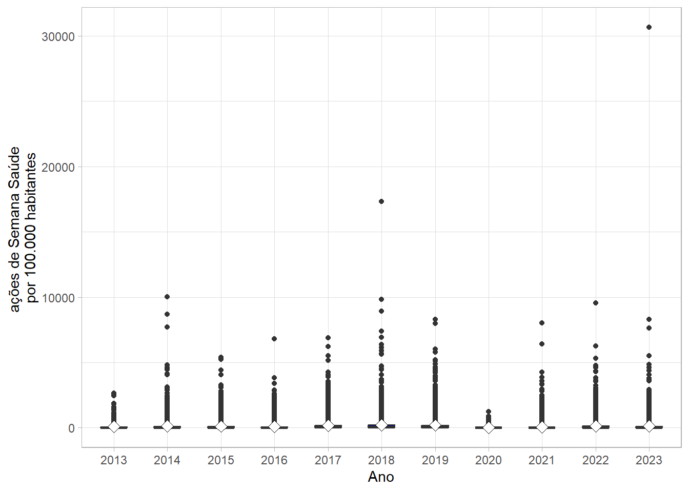
ggplot(banco) +
aes(x = ano, y = semana_saude_indicador) +
geom_boxplot(fill = c("dark blue"), width = 0.5, outlier.shape = NA) +
stat_summary(
fun = "mean", geom = "point", shape = 23, size = 3, fill = "white"
) +
coord_cartesian(ylim=c(0, 600))+
labs(x = "Ano", y = "ações de Semana Saúde \npor 100.000 habitantes") +
theme_light()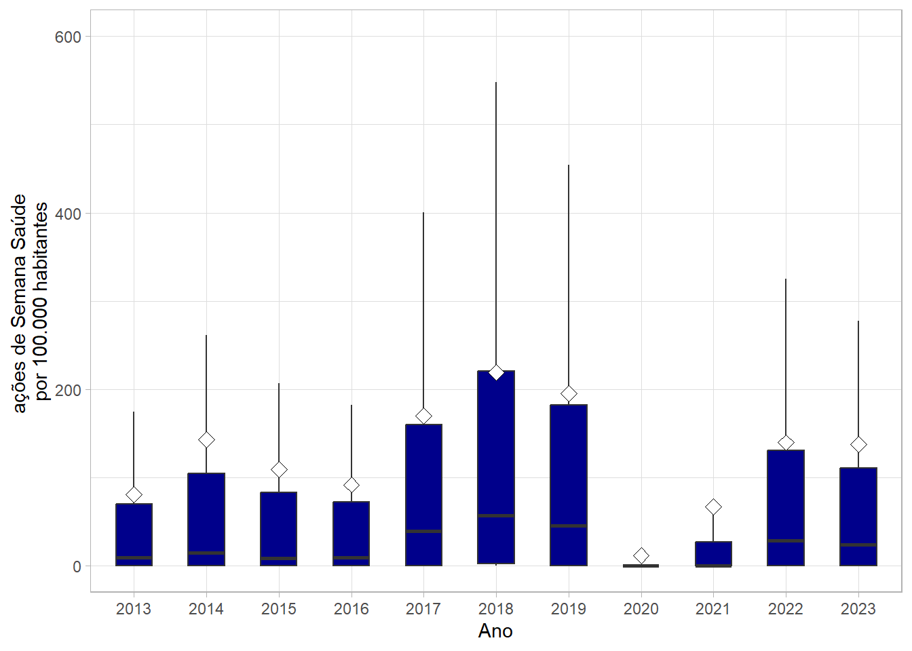
quadro(semana_saude_indicador)# A tibble: 11 × 9
ano média `desvio padrão` máximo `1_quartil` mediana `3_quartil` assimetria
<chr> <dbl> <dbl> <dbl> <dbl> <dbl> <dbl> <dbl>
1 2013 80.9 224. 2637. 0 9.66 70.1 6.70
2 2014 143. 456. 10021. 0 14.6 105. 10.4
3 2015 109. 311. 5378. 0 8.93 82.9 7.01
4 2016 92.0 257. 6822. 0 9.66 72.8 8.40
5 2017 170. 393. 6866. 0 39.7 160. 6.11
6 2018 219. 549. 17313. 2.37 57.2 221. 10.9
7 2019 195. 468. 8311. 0 45.9 182. 6.53
8 2020 12.0 57.3 1226. 0 0 0 9.23
9 2021 67.0 276. 8025. 0 0 27.1 12.3
10 2022 140. 355. 9544. 0 28.4 131. 8.97
11 2023 138. 549. 30659. 0 23.9 111. 34.2
# ℹ 1 more variable: curtose <dbl>banco %>%
group_by(uf) %>%
summarise(`Média de agravo` = mean(semana_saude_indicador)) %>%
arrange(desc(`Média de agravo`)) %>%
head(10) %>%
kable(caption = "10 UFs com maior média de ações de Semana Saúde por 100.000 habitantes", col.names = c("UF", "Média Ações"))| UF | Média Ações |
|---|---|
| AM | 205.5722 |
| RN | 205.5154 |
| AL | 198.1576 |
| TO | 189.9257 |
| PB | 184.4466 |
| MG | 173.0704 |
| MT | 159.9126 |
| SC | 153.7059 |
| PI | 130.7770 |
| PE | 127.2492 |